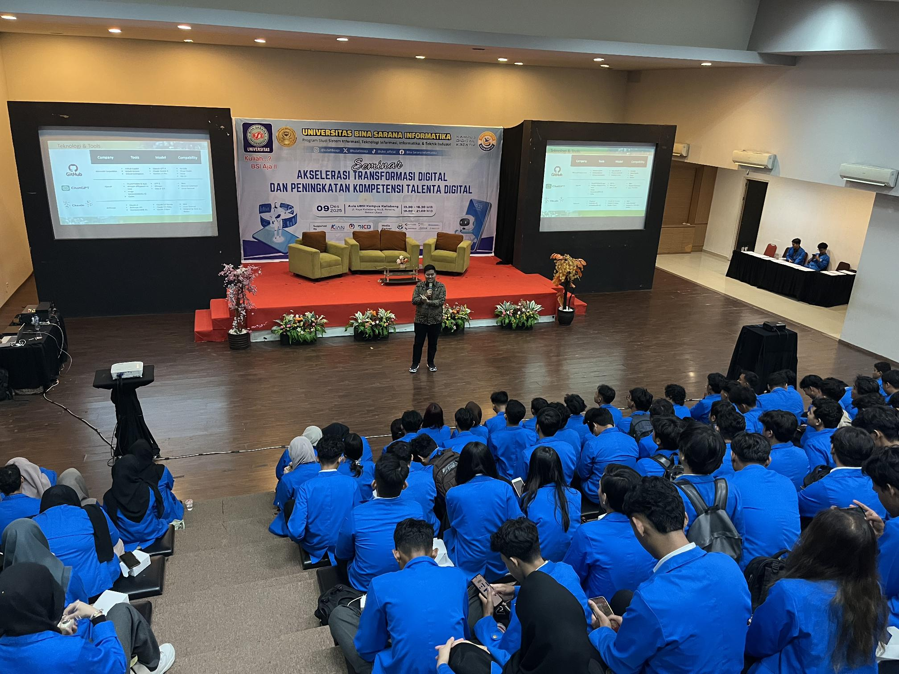

🏦
Banking Industry
Developing Android applications that support core financial business operations.
Building reliable Android applications that support critical business operations in Financial Services.
Developing Android applications that support core financial business operations.
Responsible for developing and maintaining two Android production applications.
Speaker at "Next Gen Software Engineering with AI" seminar at Universitas BSI.
Leveraging GitHub Copilot to improve development productivity.
Years Experience
Production Android Apps
Core Technologies
Application Mode
Analytics & Crashlytics
GitHub Copilot
Android Developer dengan pengalaman lebih dari 6 tahun dalam mengembangkan aplikasi Android Native menggunakan Java dan Kotlin.
Berpengalaman mengembangkan dan memelihara 2 aplikasi Android production pada industri perbankan yang mendukung proses bisnis utama perusahaan.
Fokus saya adalah membangun aplikasi yang stabil, scalable, mudah dipelihara, dan mampu memberikan dampak nyata terhadap operasional bisnis.
Saya terbiasa menerapkan MVP, MVVM, Clean Architecture, Unit Testing, serta monitoring menggunakan Firebase Analytics, Firebase Crashlytics, dan Event Logging.
Saya percaya aplikasi yang baik bukan hanya memiliki banyak fitur, tetapi juga harus stabil, aman, mudah dipelihara, dan mampu memberikan pengalaman terbaik bagi pengguna.
Teknologi harus memberikan dampak nyata terhadap proses bisnis, meningkatkan efisiensi operasional, dan membantu pengguna menyelesaikan pekerjaannya dengan lebih efektif.
Saya terus mengikuti perkembangan teknologi Android dan memanfaatkan AI seperti GitHub Copilot untuk meningkatkan produktivitas, eksplorasi solusi, serta kualitas pengembangan perangkat lunak.
A collection of technologies, tools, and engineering practices I use to build reliable Android applications.
2020 – Present
Selama lebih dari 6 tahun berkarier sebagai Android Developer, saya berfokus pada pengembangan aplikasi Android Native untuk industri perbankan dan layanan keuangan menggunakan Java dan Kotlin.
Saya berkontribusi dalam pengembangan dan pemeliharaan 2 aplikasi Android production yang mendukung proses bisnis utama perusahaan, mulai dari transaksi keuangan hingga operasional petugas lapangan.
Petugas operasional bekerja di area dengan koneksi internet yang tidak stabil.
Mengembangkan aplikasi dengan Online & Offline Mode serta sinkronisasi data otomatis.
Operasional bisnis tetap berjalan, produktivitas meningkat, dan risiko kehilangan data transaksi dapat diminimalkan.
Petugas lapangan sering bekerja di wilayah dengan koneksi internet yang tidak stabil.
Mengembangkan mekanisme Online & Offline Mode menggunakan penyimpanan lokal sehingga transaksi tetap dapat dilakukan dan akan tersinkronisasi secara otomatis ketika koneksi tersedia kembali.
Tim membutuhkan informasi yang lebih lengkap ketika terjadi kendala pada aplikasi production.
Mengimplementasikan Event Logging, Firebase Analytics, dan Firebase Crashlytics untuk mempermudah proses investigasi.

Berkesempatan menjadi pembicara seminar mengenai perkembangan Artificial Intelligence dalam Software Engineering modern.
Saya terbuka untuk berdiskusi mengenai Android Development, Software Engineering, maupun peluang kolaborasi.